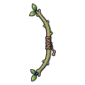
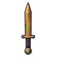
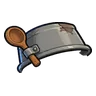

คอกสัตว์ร้าง
ดูบนแผนที่และวิธีไป วางแผนฟาร์ม
ทุ่งในป่ากองไฟ · Lv 10–18
ชั้นล่าง / ดันเจี้ยน
เดินต่อไป
มอนในแมพ (7)
| มอน | Lv | ในแมพ | ธาตุ | โซน |
|---|---|---|---|---|
| 10–17 | ≈42 | ดิน | คอกแกะดำ | |
| 12–18 | ≈35 | มืด | คอกแกะดำ | |
| 12–18 | ≈20 | ดิน | คอกแกะดำ | |
| 10–15 | ≈14 | ลม | ||
| 12–18 | ≈8 | ดิน | ||
| 12–18 | ≈1 | มืด | ||
| 20–20 | 1 | มืด |
≈ จำนวนที่อยู่ในแมพพร้อมกันโดยเฉลี่ย คิดจากไฟล์เกม (จุดเกิดของแมพ × 4 แบ่งตามสัดส่วนของแต่ละตัว) ตายแล้วเกิดใหม่ที่เดิมใน 22 วินาที · ตอนเล่นออนไลน์เซิร์ฟเวอร์เป็นคนเกิดมอน อาจไม่ตรง
อุปกรณ์ที่ดรอปในแมพนี้
| ของ | โอกาสสูงสุด |
|---|---|
| 0.25% | |
| 0.25% | |
| 0.25% | |
| 0.25% | |
 ธนูกิ่งหลิว | 0.25% |
 ดาบคู่สำริด | 0.25% |
| 0.15% | |
| 0.12% | |
| 0.12% | |
 หม้อต้มซุปเป็นหมวก | 0.08% |
| ต้นอ่อนงอกบนหัว | 0.08% |
| 0.06% |